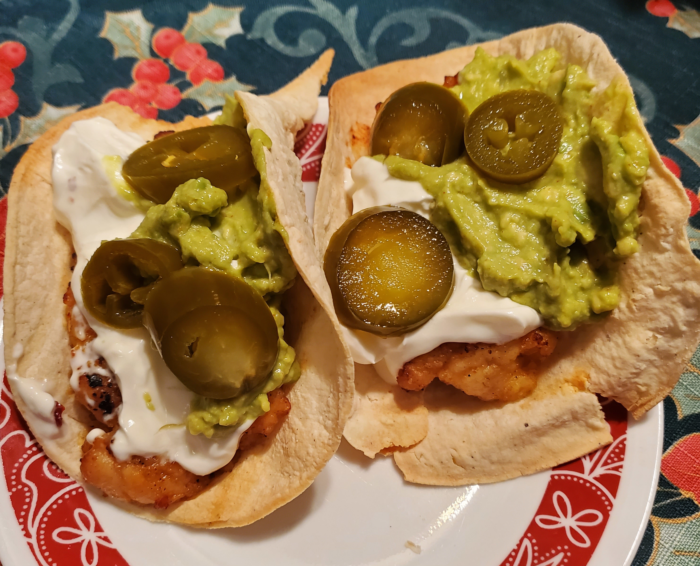

Description:
Here's a really simple recipe I came up with when I was messing around in the kitchen. My girlfriend absolutely loves it every time I make it.
It's not sophisticated in the slightest, but I think the simplicity of it really helps it in the end. Adjust according to portion size & taste.
Prep time: 15 min
Cook time: 20 min
Total time to make:
35 min
What you'll need:
Ingredients:
- 1 raw chicken breast
- corn starch
- chili flakes
- white pepper
- salt
- paprika
- garlic powder
- Thai Kitchen Sweet Red Chili Sauce
- tortillas
- olive oil
- sour cream
You'll also need:
- a stove-top
- a cutting board
- a knife
- a bowl for the raw chicken
- a bowl for the cooked chicken
- a pan or wok
- a flat pan for the tortillas
Steps:
- Dice the chicken breast(s) into little squares.
- In a large bowl, coat the diced chicken in corn starch. Don't worry about going overboard,since you'll want every piece to be coated.
- In a large heated wok, pour 1tbsp of olive oil, making sure to coat the entire wok.
- Place the starch-coated chicken into the wok, spread evenly. Add extra olive oil.
- Add salt, chili flakes, white pepper, paprika, garlic powder, & any other spices you want to the wok.
- For the next 10 minutes, stir & flip chicken, making sure to spread spices evenly to ensure that every piece is cooked thoroughly.
- On a separate burner, heat a flat pan to medium. Make sure the pan is fully heated. Cook tortillas, flipping once each tortilla expands, until a crust forms on both sides. Place tortillas onto their own plate for cooling.
- Once the chicken is fully cooked, remove from burner & place cooked chicken into a clean bowl. Pour a generous amount of Thai Kitchen Sweet Red Chili Sauce & toss, making sure every piece is coated entirely.
Now you're ready to construct & eat your tacos! Put the chicken in with your tortillas, pour on sour cream, & add any other toppings that you'd like!
Enjoy!